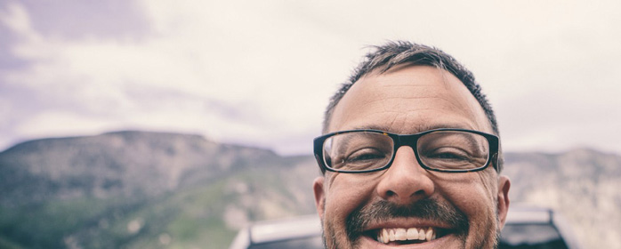

Originally from the foothils of Colorado, Matthew Smith is a designer rooted in studio art. His professional career spans design work for clients likeThe Gates Foundation, U.S. Postal Service, Fox, MIT, and Seth Godin. Matthew has led crative for startups on both the West and East coasts, founded CoWrok in Greenville SC, and launched Grok, a perculiar and unique event, it is a gathering of people who want to discuss the challenges and successes of the industry.
Matthew is now captain on The Fathom & Draft, he's obsessed with designing meaning ful experiences for customers. Matt and his crew create tangible, robust and emotional connections between their clients customers and their product services. The teams that are created for design, craft brands and experiences across digital and physical spaces.
Matthew is founder of a few other online brands such as
- Really Good Email
- Atlas Local
- Pattern Tap
There are a few other projects Matt has worked on, as Co-founder, such as creative director for Zaarly and Squared Eye. You can find out more at Matt's LinkedIn page and The Fathom & Draft website.